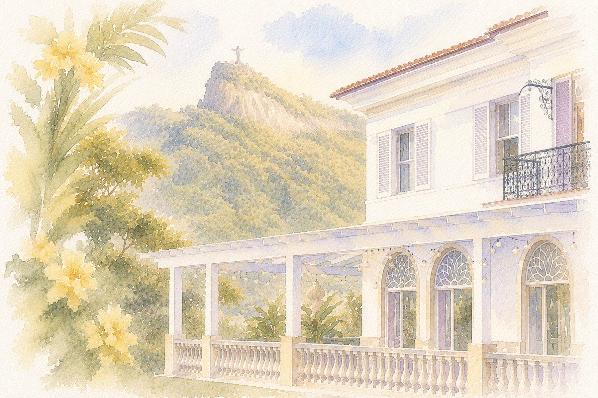
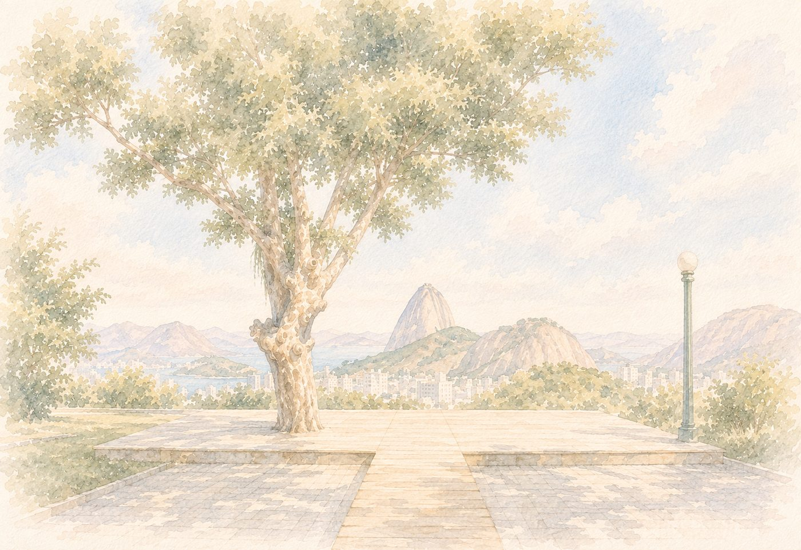

Save the Date
22 · 08 · 2027
Rio de Janeiro, RJ
De um sotaque a uma vida inteira
Uma história que começou com um encontro inesperado. Que cresceu com o tempo. Que atravessou diferentes fases da vida. E que, depois de tantos anos, continua escolhendo seguir em frente, lado a lado. Agora, para a vida inteira.
Entre uma conversa e outra, um sotaque carioca chamou a atenção. Um detalhe simples, quase casual, que se tornou uma das lembranças mais curiosas do início dessa história.
Ela na Arquitetura, ele na Engenharia Civil, cada um com a sua rotina e a sua cidade. Vieram as conversas, os encontros entre uma aula e outra e os amigos em comum, e aos poucos os dois foram achando mais motivos para estar por perto.
Numa noite tranquila, aquela aproximação deixou de ser descoberta e virou escolha. Ela disse sim, e começava ali uma nova etapa.
Ana presenteou Maxwel com a primeira viagem de avião dele, para Angra dos Reis. Foi o começo de um gosto que os dois passaram a dividir, com um jeito próprio de organizar: ele nas passagens e nas milhas, ela nas hospedagens e nos roteiros.
Formado em Engenharia Civil, Maxwel começou a empreender, e vieram os primeiros desafios de construir uma carreira. Ana acompanhou de perto tanto as conquistas quanto as incertezas: no dia do lançamento do Obra Play, ela preparou uma surpresa para comemorar, momento que ficou marcado para sempre na memória.
Nova York já era de Ana muito antes daquela viagem: a paixão era tanta que ela desenhou a vista da cidade no próprio quarto. Para Maxwel, caminhar por ali era reconhecer cenas de filme em cada esquina. Voltaram com a vontade, cada vez maior, de conhecer o mundo juntos.
Depois de anos entre aulas, trabalhos e estágios, Ana se formou em Arquitetura. Era a vez de ela começar a própria trajetória, com os dois já acostumados a acompanhar de perto o caminho um do outro.
Ana fundou o escritório ao lado da irmã e passou a assinar os próprios projetos. Foram anos de trabalho intenso para os dois, e de aprender que crescer junto também é saber ajustar o passo.
A viagem era para Orlando. O que Ana não sabia é que, pouco antes de voltarem para casa, os dois seguiriam para Nova York, com tudo planejado por Maxwel. No Valentine’s Day, entre o frio e a cidade iluminada, veio o pedido e a certeza de que aquela noite seria lembrada para sempre. No dia seguinte, caminhando pelo Central Park, os dois viram a neve cair pela primeira vez.
O Rio esteve presente desde o começo: no sotaque daquela primeira festa, nas raízes da família de Ana, nas viagens que ficaram na memória. Desta vez, a cidade será mais do que um destino. Será o cenário do início de uma nova etapa.
Onde vai ser
Escolhemos o Rio de Janeiro para dizer “sim”: um cantinho com vista para o Cristo Redentor e o Pão de Açúcar, onde o mar encontra as montanhas.

O endereço completo será revelado mais perto da data, junto do convite oficial. Por enquanto, guardem a região, e o dia 22.08.2027!
Vem mais por aí
Ao longo do próximo ano vamos liberando cada uma dessas seções por aqui.
Hotéis e pousadas indicados perto do local da festa.
Sugestões para as convidadas se arrumarem no grande dia.
Nossa lista de presentes para quem quiser marcar a data com algo especial.
Horários, cronograma do dia e informações do convite oficial.